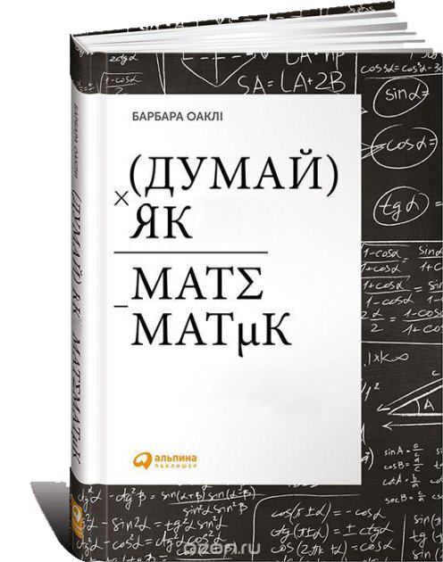

Деякі погані звички повинні працювати на вас.
Прокрастинація - це як отрута в маленьких дозах, приносить руйнівні наслідки в
майбутньому.
Залишаючи все на останню хвилину, неможливо досягти бажаного результату.
Позбавившись прокрастинації ваше життя кардинально зміниться в кращу сторону.
Не витрачайте силу волі на боротьбу з прокрастинацією, це мало ефективно.
Чим краще ви володієте якимось навиком, тим більше він приносить вам задоволення.
Для боротьби з прокрастинацією концентруйте свою увагу на навчанні хоча б на короткий
час, але часто.
Розділ 5
Як не піддатися прокрастинації.
Щоб змінити свої погані звички - змініть свої звичайні дії.
Для зміни звички потрібна віра в себе та в обраний шлях.
Змінюючи ваші звички, вигадайте для себе маленькі винагороди.
Знайдіть однодумців. Спілкування з однодумцями нагадує нам про наші цілі навіть коли ми
збиваємося з вірного шляху.
Працюйте або навчайтеся по 25 хвилин не відволікаючись, а потім дайте собі перепочити.
Концентруйтесь на процесі, а не на кінцевому "продукті". Зробіть процес своєю
"зомбі-звичкою", в якому можна пливти за течією.
Багатозадачність шкідлива. Не думайте про таймер, час або інші речі.
Якщо ви перестали засвоювати матеріал невеликі фізичні навантаження допоможуть вам.
Контролюйте свої невдачі. Краще навчається той, хто краще справляється зі своїми
невдачами та робіть їх сходинкою для свого навчання.
Розділ 6
Поглиблюємось в причини прокрастинації.
Формування порцій допомагає збільшити обсяг доступної робочої пам'яті.
При створенні бібліотеки порцій, важливо свідомо фокусуватися на найскладніших поняттях
та аспектах вирішення завдань.
Якщо ви не намагаєтеся освоїти матеріал, вам гарантована невдача, проте ті, хто
цілеспрямовано докладає зусиль, досягнуть набагато більших успіхів.
Розділ 7
Сформувати порцію
інформації - значить інтегрувати якесь поняття в чітко оформлений нейронний
патерн.
Ментальні трюки можуть бути ефективним засобом:
- знаходьтесь,
де вас не турбуватимуть
- практикуйтеся в ігноруванні відволікаючих моментів.
Планування розваг – один із найдієвіших способів боротьби з прокрастинацією і один з
найважливіших стимулів уникати прокрастинації.
Основа боротьби з прокрастинацією – складання осмисленого щоденного списку справ із
перевіркою того, чи правильно ви просуваєтеся вперед.
Складайте список справ на день напередодні увечері.
"Жаби" з'їдайте відразу (виконуйте найскладніші завдання зранку).
Розділ 8
Способи, поради та хитрощі.
Ведіть щоденник планування.
Складайте список справ.
Розділіть роботу на невеликі порції.
Насолоджуйтесь радістю від успіху.
Винагороджуйте себе.
Навчіться розслаблятися і не відчувати при цьому почуття провини.
Розділ 9
Боротьба з прокрастинацією.
Потрібно зосередитися і не відволікатися на сторонні подразники.
Метод «палацу пам'яті» ...
... розміщення об'єктів, що запам'ятовуються в знайомому місці.
Формуй порції інформації, а не просто запам'ятовуй розрізнені факти.
Вдосконалення пам'яті.
Розділ 10
Вигадуйте метафори чи аналоги.
Навчіться створювати уявний зв'язок з об'єктами.
Створюйте абревіатури для довгих термінів.
Візуалізуйте об'єкти, запам'ятовуйте вагу, запах.
Пишіть конспекти та ведіть щоденники.
Ще кілька порад щодо запам'ятовування.
Розділ 11
Створюйте м'язову пам'ять завдяки щоденним тренуванням
Здійснення помилок - це не привід зупинятися. Помиляючись, ви також отримуєте практику.
Не варто рівнятися на інших за швидкістю вирішення питання. Велика ймовірність помилки.
Концентруйтеся на своїх сильних та слабких сторонах.
Вчимося цінувати свій талант.
Розділ 12
Ключем до успіху послужила витривалість у поєднанні з гнучкістю розуму та здатністю
визнавати свої помилки.
Навіть найслабший зможе досягти великих успіхів.
Нестача здібностей може компенсуватися постійною працею та зосередженістю.
Працездатність замінює собою талант або, ще краще, створює талант.
Відтворення інформації на папері сприяє її запам'ятовуванню.
Форматуємо
мозок.
Розділ 13
Мислення не більше ніж розмова із самим собою.
Асоціації допомагають запам'ятовувати нову інформацію.
Якщо розкласти складний матеріал на окремі ключові елементи, в результаті ви зрозумієте
матеріал набагато краще.
Абстрактний підхід важливий для процесу навчання.
З плином часу ти вивчаєш все більше і більше інформації, вона дається легше і здається,
що ти вчиш все менше.
Проблема прокрастинації – постійне відволікання.
Розвиток внутрішнього кругозору через рівняння-вірші.
Розділ 14
Розділ 3
Вчитися – значить творити.
Розфокусування уваги
осяяння.
Творчий підхід
альтернативні рішення.
Помилки неминучі. Виявлення помилки
прогрес.
Зміна станів (сфокусованість/розслаблення)/
досягнення мети.
Постійність та однорідність навантажень(як у спорті).
Оцінка своїх сильних та слабких сторін, не гнатися за «відмінниками».
Установка на першу ж ідею
пропустити інші рішення. Кліпання дає можливість по-новому побачити ситуацію.
Невдача - чудовий вчитель.
Розділ 4
Порції інформації та ілюзія компетентності.
У гніві, страху та напрузі мозок працює гірше.
Сфокусована практика та повторення.
Згадування ефективніше за перечитування.
Об'єднання
робочої інформації в порції допомагає мозку працювати ефективніше.
1. Зосередити увагу на інформації

2. Зрозуміти основну ідею
:
3. Накопичувати контекст (як застосовувати дану порцію інформації і коли)
порція інформації.
Розділ 1
Відчиніть двері.
Освоєння одних технік може стати найкориснішим інструментом оволодіння іншими.
Не берись за заучування великих обсягів інформації, а залишай собі час попрактикуватися.
Хороші оцінки потребують праці!
Розділ 2
Легкість – найкращий підхід.
Чому зайва старанність може бути шкідлива.
Розуміння загального підходу може дати нам ключ до процесів, що відбуваються в мозку.
Спочатку схопіть деталь загальної картини, що вивчається,а потім повертайтеся до
предмета.
Вимкнути точне сфокусоване мислення і включити розсіяний режим, що дозволяє бачити
широку картину.
Розслаблення - важлива частина важкої роботи, якщо її потрібно зробити добре.
Навчання – це подолання нерозуміння.
Для засвоєння нових понять і розв'язання задач важлива не тільки початкова концентрація
уваги, але і подальше розфокусування погляду.

Іспити та тести.
Розділ 17
Тестування – надзвичайно сильний досвід навчання.
Якщо ви здебільшого дивитеся, як ваші товариші приходять до правильних рішень, ви
приносите собі більше шкоди, ніж користі.
Приступайте до вирішення завдань, починаючи з найскладнішого, але переключайтеся на щось
інше, якщо на другій хвилині справа застопориться.
Техніка «спочатку складне, потім просте» робить роботу мозку ефективнішою, бо дозволяє
мозку працювати над декількома завданнями одночасно.
Недоречна завзятість може створювати непотрібні складнощі у вивченні математики та
природничих наук.
Щоб побороти передекзаме-
наційну паніку, майте запасний план на випадок найгіршого результату, тоді страх почне
зникати.
Припиніть повторювати «Я хвилююся через іспит»,
кажіть: «Іспит – це так цікаво, я хочу показати себе з кращого боку!».
Перевіряти роботу у зворотньому порядку – гарний спосіб подивитися на зроблене свіжим
поглядом та знайти помилки.
Розкрийте свій потенціал.
Розділ 18
Бажання негайно щось з'ясувати заважає самому процесу з'ясування.
В результаті поступових зусиль ви отримаєте міцні нейронні структури. Таке навчання
корисніше, бо сприяє глибшому засвоєнню матеріалу.
Запам'ятовування – найважливіший аспект набуття досвіду, але може заважати «побачити ліс
за деревами».
Розібравшись у початкових, встановлених «за замовчуванням» налаштуваннях мозку – і
покладаючись на ці знання, ви можете стати експертами.
Що треба робити: згадувати; перевіряти себе; створювати порції інформації; застосовувати
різні підходи; робити перерви.
Що не треба робити: пасивно перечитувати; робити багато виділень; вирішувати однотипні
завдання; нехтувати можливістю консультуватися.
Глибоке, отримане практикою засвоєння добре зрозумілих порцій інформації – необхідна
складова при оволодінні науками.
Періоди розслаблення дозволяють поглянути на матеріал з іншого боку – поєднати його з
ширшим контекстом та загальною картиною.
Ми відповідаємо за власні знання.
Розділ 15
Почніть самоутворюватися: -посилюйте здатність мислити -ваідповідайте на нестандартні
запитання
Завзятість твій друг у вивченні матеріалу.
Невдача не така страшна. Головне зрозуміти свої помилки.
Як уникнути зайвої впевненості.
Розділ 16
Перевіряй свою роботу та роби самоаналіз.
Не бійся обговорити свою роботу з колективом, щоб уникнути сліпих плям у ній.
Якщо щось не розумієш, не бійся про це сказати.
Командна робота допоможе: -побачити помилки у своїх міркуваннях -покращити процес
отримання знань -навчить оперативно мислити.